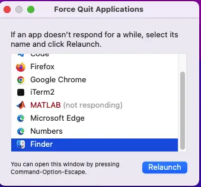

Python vs. MATLAB: Price, Performance, Features¶
Python and MATLAB (And Octave, Oh My!)¶
In recent weeks I’ve been working on an excellent applied mathematics course in Linear Algebra that uses Python and MATLAB for coding examples. For the course, I used Octave, an open-source tool for editing and running MATLAB programs, which worked out fine for all the code we worked on.
However, I wondered how the MATLAB portion might work if I used the “real product.” For instance, I’d heard that MATLAB’s performance was better than Octave’s, but I hadn’t verified that claim. Also, I felt that there were some usability issues with Octave that MATLAB might resolve, so I wanted to look into those.
In addition to learning more about MATLAB’s relationship to Octave, I was curious to see how Python stacked up to MATLAB. I already knew about some of the syntactical differences and “pros and cons” that I wanted to discuss here. Beyond that, I had several open questions I tried to answer.
MATLAB has a feature that does not appear in Octave called the Live Editor. This is a Notebook-like interface where you can combine code, code output, and formatted text. I was very interested to see how this feature compared to my favorite tool for writing Python articles and publishing samples, JupyterLab.
I wanted to see how MATLAB’s performance compared to Python’s. Moreover, since many users had commented that MATLAB was faster than Octave, I didn’t think it was fair to compare Python to Octave directly.
I’m not a consistent cheapskate, so I don’t mind spending on a tool that offers clear advantages. On the other hand, like anyone, I won’t decide to buy if the free options are equivalent or superior in terms of convenience and features. Between Python, MATLAB, and Octave, MATLAB was the only one that wasn’t free and open-source, so naturally, I wanted to see if it brought anything to the table that was worth the price.
This article will explore all of these questions in some detail. However, before we get into the price, benchmarks, and features details, we begin with a high-level overview of the Python and MATLAB languages and their respective use cases.
MATLAB vs. Python Language Overview¶
General Language Features¶
In comparing MATLAB to Python, we first need to clarify an essential difference between the two. MATLAB is a specialized language for numerical computing, data analysis, and linear algebra. On the other hand, Python is a general-purpose programming language that handles many programming tasks, including cloud computing, back-end web development, and others.
Python also handles the kinds of numerical computing and data analysis features we mentioned in connection with MATLAB. The difference is that in Python, they are provided by some high-quality, third-party libraries, whereas in MATLAB, these features are baked in.
MATLAB’s Advantages Compared to Python¶
MATLAB users commenting on Python quickly point out that MATLAB represents vectors and matrices in a way that’s “closer to the math” than Python. For example, in MATLAB, you can enter and correctly display row vectors vs. column vectors simply by changing the delimiter between the numbers.
>> V1 = [ 1 2 3 ]
V1 =
1 2 3
>> V2 = [ 1 ; 2 ; 3 ]
V2 =
1
2
3
This simple convention of starting a new row with a semi-colon also makes small matrices easy to set up and understand.
>> M = [6 5 4 ; 3 2 1]
M =
6 5 4
3 2 1
Beyond this, unlike in Python, matrix indices are one-based in MATLAB. For example, given the matrix above, M(1,2) refers to the second element in the first row, or 5. Mathemeticians also use one-based indexing for matrices, so MATLAB’s approach is more intuitive in that respect.
Finally, because MATLAB specializes in numerical computing, we could do all of the above plus operations on the matrices and vectors without importing or installing anything.
Getting set up for numerical work in Python involves a few more steps. NumPy and SymPy are two libraries that support matrix operations, for example, but the more commonly used tool for this use case is NumPy.
In Python, therefore, you’ll need to install the NumPy package as well (typically via either “pip install numpy” or “conda install numpy”). You also need to import it before you can work with it. The code to create a matrix like the one above is certainly not rocket science, but it is a bit more verbose than the MATLAB version. Here are a couple of ways to accomplish it:
import numpy as np
# Two ways to create a 3x2 matrix in Python
M = np.array([1,2,3,4,5,6]).reshape(2,3)
print(M)
print("")
M1 = np.array([ [1,2,3],[4,5,6] ])
print(M1)
# Output
[[1 2 3]
[4 5 6]]
[[1 2 3]
[4 5 6]]
Vectors in NumPy are created as one-dimensional arrays and always output as row vectors. One trick to get around this for display purposes is to wrap it in an Nx1 array using “reshape.”
V = np.array([1,2,3])
print(V.reshape(3,1))
# Output
[[1]
[2]
[3]]
One user in a thread comparing MATLAB to Octave mentioned the toolboxes as a distinguishing feature of MATLAB, and admittedly there’s a rich UI here that I haven’t had time to explore in great depth. My first impressions, however, are that of those I’ve tried, some usability issues meant I eventually had to resort to code anyway.
To give some specifics, MATLAB displayed a perpetual wait cursor when I tried to edit variable names using the “Import Data” tool, through doing it in code was easy enough:
users = readtable("users.csv")
users.Properties.VariableNames = ["Offset", "UserCount"]
Python’s Advantages Compared to MATLAB¶
Python has several advantages in comparison to MATLAB. One of Python’s features is that it’s easier to learn than other languages. (To give you an idea, the language that was one of its main inspirations was one called “ABC”). Moreover, as a free and general-purpose language, features not included in one library can typically be found easily in another.
For example, Python boasts two packages for doing symbolic math: SageMath and SymPy. Both of these are free and open-source. A perpetual license for the comparable tool in MATLAB will set you back $1,120, over and above the cost of MATLAB itself (which we discuss below).
Because it is a free and popular language, Python also boasts a large ecosystem of free tooling. IDE choices include Spyder, PyCharm (community), and others. Another excellent option in this space is VS Code, together with the Python extension that Microsoft maintains.
Jupyter Notebook alone features many free or freemium online options, including Google’s CoLab, SageMath’s CoCalc, and (shameless plug time) this website’s JupyterLite-based online Python portal.
Popularity¶
Python is the most popular programming language according to the TIOBE index (and other metrics such as web trends). Here the playing field is not level because fully the top seven spots on the TIOBE index are dominated by general-purpose languages.
Having said that, however, MATLAB does make a really strong showing in terms of popularity. It currently ranks at number fourteen among all languages, with only three “special purpose” languages ahead of it (R, SQL, and PHP). It even outranks many general-purpose languages including Scala, Kotlin, Julia, and Perl.
More to the point than the absolute difference in popularity is the difference in the trend. Python’s popularity has grown enormously in recent years, and much of that growth is happening in the area where MATLAB used to dominate.
Consider, for example, Coursera founder Andrew Ng’s very popular course in Machine Learning. For some time, this was being taught in Octave (to support users who wanted a free tool). More recent iterations of the course, however, are being taught in Python using scikit-learn and TensorFlow.
Cost¶
Python is free and open source. Some commercial development tools are available, but there are many free ones as well. In contrast, MATLAB is a paid commercial product, so please check the MathWorks website for the latest pricing. As of this article, the non-commercial home edition is \(149, and the student edition is \)49. You need to request a quote for the commercial edition.
One thing to bring up here in fairness is that MATLAB does offer a generous (30-day) free trial, and I took advantage of that to evaluate it and review it here. So you can evaluate it independently if you wish.
MATLAB’s Live Editor vs. Python’s Jupyter Lab¶
I’m a huge fan of the Jupyter environment. I use it for everything from writing and sharing articles here to organizing my math studies. That’s why as I was evaluating MATLAB, the Live Editor feature was the first thing I tried out.
MATLAB’s Live Editor feature allows you to “create scripts that combine code, output, and formatted text in an executable notebook.” This is a feature of MATLAB that Octave doesn’t have, and since it sounds very much like what I like about Jupyter, I thought it sounded pretty interesting.
Oh, excuse me for a second, MATLAB appears to have crashed.

OK, I’ve restarted it. In fairness, that’s the first time that happened, and MATLAB has been open overnight.
In general, I’ve found MATLAB to be reasonably robust despite what just happened, but the reason I mention the crash here is that it happened at an appropriate time. You see, in general, MATLAB handles “vanilla” MATLAB code fine, but my experience with the Live Editor is that it’s not stable enough to be worth spending more time exploring it. When I first started working on it, in the space of a couple of hours it froze three times. Apparently, I’m not the only user to encounter this; see this thread or this one on the MathWorks site.
For a reliable Notebook-like environment for MATLAB code, it’s possible that the Octave kernel may work well, but I just learned about it today so I haven’t had time to demo it for you (perhaps a future article). The MATLAB Integration for Jupyter seems to beg the question a bit as it seems to be basically a launching tool for MATLAB desktop, though there are hints that a Jupyter kernel for MATLAB code is in development.
MATLAB, Python, and Octave: Some Performance Benchmarks¶
One reason to work with a commercial numerics tool over a free one is that you’re dealing with matrices or tensors that are of medium size, and you need the operations to complete quickly. What I mean by medium size in this context is a collection that is not the sort of small sample (maybe 4 x 4 elements) that you’d use when learning to do things by hand – but neither is it so large that it won’t fit into the memory of your machine, so it requires you to attack it piecemeal.
With this use case in mind, I put together a modest set of benchmarks to see how Python stacked up against MATLAB (and its free alternative, Octave). I want to caution you that for the kinds of tiny matrices one might deal with in a Linear Algebra class, any one of these tools is performant enough, and will return a result in a small fraction of a second – so in that case, you can safely skip this section. However, for larger matrices and for processor-bound code (which we’ll discuss a bit later), performance does begin to matter.
Thinking about what sorts of operations would be slow enough to matter, I decided first to try some tensor products (think dot products or matrix multiplication, but with one or more extra dimensions to work with).
The code for the tests is straightforward enough. Here’s the MATLAB version first:
% Test a decently-sized tensor product
t1 = clock();
A = rand(30,800,500);
B = rand(30,800,500);
prod_size = tensorprod(A,B,2,2);
disp(size(prod_size));
fprintf("%0.5f seconds\n", etime(clock(), t1) );
I realize that MATLAB has a timeit function, but because Octave doesn’t I standardized on this way of checking simple elapsed time for MATLAB code. (I only found out a bit late that this first test case worked for Python and MATLAB, but not for Octave, but we’ll share more in a moment). I also wanted to avoid relying on the profiler, since I wasn’t sure how much that would add to the execution time.
For this and the remaining test, I also included some simple summary output and the creation of the random collections in the time being tested so I could run the tests in different ways.
Here is the corresponding Python version, which here is in a function so I could use IPython’s %time magic function.
import numpy as np
import numpy.linalg as linalg
def tensor_case():
A = np.random.rand(30, 800, 500)
B = np.random.rand(30, 800, 500)
C = np.tensordot(A, B, axes=(1, 1))
print(C.shape)
The table below shows the actual time and average of five runs. The numbers shown are in seconds.
| Tensor Product Test | Python | MATLAB |
| 2.45 | 5.24631 | |
| 2.28 | 5.12205 | |
| 2.32 | 5.54716 | |
| 2.12 | 5.54716 | |
| 2.37 | 5.2135 | |
| Average (seconds): | 2.31 | 5.34 |
I wasn’t too surprised to find Python ahead, since, in fairness, NumPy is built with C while MATLAB is written in Java, so underneath the covers we’re comparing C performance to Java. As we’ll see later, for at least one simple (if contrived) test of MATLAB vs Python language performance for non-vectorized operations, MATLAB will do much better (an order of magnitude better).
Meantime, since I didn’t find the tensorprod function in Octave, for the next test I wanted to try multiplying two simple matrices so I could see how Python stacked up to both Octave and MATLAB.
Again, here are the code and the results.
In MATLAB:
% A simple timing comparison for random matrix creation and multiplication
% we can use in MATLAB and Octave
t1 = clock();
A = rand(5000,8000);
B = rand(8000,5000);
C = A * B;
disp(size(C));
fprintf("%0.5f seconds\n", etime(clock(), t1) );
And in Python:
import numpy as np
def matrix_case():
A = np.random.rand(5000, 8000)
B = np.random.rand(8000, 5000)
C = A @ B
print(C.shape)
Results for five runs:
| Matix Multiplication Test | Python | MATLAB | Octave |
| 2.21 | 4.70814 | 2.67995 | |
| 2.27 | 4.69231 | 2.95874 | |
| 2.33 | 4.67201 | 2.82718 | |
| 2.25 | 4.67201 | 2.66544 | |
| 2.24 | 4.89496 | 2.64445 | |
| Average (seconds): | 2.26 | 4.73 | 2.76 |
Again, Python turned out to be significantly faster than MATLAB in this case. What’s surprising about these results is the strong showing against MATLAB that Octave turned in. Given what I had heard, I thought that Octave would do worse. Given that matrix multiplication is a pretty simple operation conceptually, perhaps this isn’t the kind of thing that a commercial shop can really optimize, so the difference here may have to do with the Java runtime or some other unknown.
Finally, I wanted to try to do a common operation with a matrix that wasn’t a simple dot product, so I settled on getting the eigenvalues of a square matrix.).
Here’s the MATLAB version:
t1 = clock();
LENGTH= 3000;
M = rand(LENGTH, LENGTH);
eig(M);
fprintf("%0.5f seconds\n", etime(clock(), t1) );
In Python we have:
import numpy as np
import numpy.linalg as linalg
def eigen_case():
size = 3000
M = np.random.rand(size**2).reshape(size, size)
linalg.eigvals(M)
Here are the results of the eigenvalue benchmark:
| Eigenvalues benchmarks | Python | MATLAB | Octave |
| 6.58 | 8.90872 | 11.17574 | |
| 6.52 | 8.49446 | 10.41338 | |
| 6.71 | 8.516 | 10.79449 | |
| 6.44 | 8.37918 | 10.47483 | |
| 6.68 | 8.35057 | 11.88499 | |
| Average (seconds): | 6.59 | 8.53 | 10.95 |
MATLAB did comparatively better in these results. Here it outperformed Octave, for example. In addition, although Python still came out ahead, in this case, the gap between MATLAB and Python was not as pronounced as it was earlier.
For many everyday vectorized numerical tasks, then, it appears Python comes out ahead. However, as I considered this I began to think comparing MATLAB to NumPy was a bit unfair, since it’s pretty hard without assembly language to beat C’s performance for this sort of thing.
With this in mind, I ran a final test that ran some code in a loop. It turned out that MATLAB was so performant on simple loops that I had to work somewhat hard at it, but filling an array with 10,000 square roots times 10,000 iterations slowed it down pretty well (that’s 100 million iterations!) Here’s the MATLAB version:
t1 = clock();
VALS = 10000;
container = zeros(VALS);
for j = 1:VALS
for i = 1:VALS
container(i) = sqrt(i);
end
end
fprintf("%0.5f seconds\n", etime(clock(), t1) );
Here’s the corresponding Python code:
import numpy as np
from math import sqrt
def code_benchmark():
VALS = 10000
container = np.zeros(VALS)
for j in range(0, VALS):
for i in range(0, VALS):
container[i] = sqrt(i)
For this code, MATLAB performed extremely well, typically turning in times of 0.7 seconds or so. Python, meantime, was about eleven times slower, with a typical speed of 7.6 seconds. Octave, in contrast, couldn’t seem to run the code at all in the IDE, but from the command line managed to get through it in an abysmal 280 seconds or so (that’s about 400 times slower than MATLAB)!
Taking out the square root of course sped things up for everyone somewhat proportionally, since we were just looping for looping’s sake, one hundred million times. That would take MATLAB about 0.05 seconds, while Python did it in about .8 seconds. Octave still brought up the rear at 5 seconds.
If you’re interested in the details, these benchmarks were run on Apple Silicon (M1 chip) with 16 GB of RAM. The Python version was 3.10.6, and NumPy is at 1.23. On the MATLAB side, we’re running version R2022b. We tested these against GNU Octave is running version 7.1.0.
Closing Thoughts and Additional Resources¶
The Linear Algebra course I mentioned earlier that uses Python and MATLAB in addition to teaching the math behind it is Mike X. Cohen’s excellent Complete Linear Algebra: Theory and Implementation in Code.
Although it wasn’t our primary purpose when we set out, looking at the differences between MATLAB and Python has also shed light on some of the differences between MATLAB and Octave. Both the MATLAB toolbox (graphical widgets) and the Live Editor distinguish MATLAB from Octave, but as we’ve seen, there are stability issues with these that make this feature advantage less clear-cut.
Much more to the point in considering MATLAB over Octave are the huge performance advantages MATLAB has in most cases and the wealth of language features. In particular, I found while trying to make the tests portable to MATLAB and Octave that Octave lacks many newer functions in the MATLAB language. Also, as we saw, for non-trivial code running processor-intensive code, the MATLAB language really does best in the MATLAB product.
Comparing MATLAB to Python, we encounter a different flavor of some of the same basic issues. In terms of language usability, MATLAB in one sense is simpler for plain numerical work, as it functions without the need for additional libraries or imports.
It also appears to be more performant as a language than Python, though the 3.11 series of Python may close that gap somewhat, and for the NumPy-heavy code that one would use for most linear algebra tasks, Python performs better.
Python, however, has the advantage of being free, more widely used, and more general purpose.
The biggest advantage Python has, however, is in the area of tooling. The full Python language is well supported by multiple, robust tools. For full MATLAB language support, you need the commercial IDE because Octave lags behind.
Unfortunately, in my view, the instability of the MATLAB development environment fails to justify the added cost. In fairness, however, I already know Python well, so installing additional libraries for numerical and computational work is not an issue for me. For others, the fast performance of the runtime and the “math-friendly” nature of the language may still make it attractive enough to overcome the limitations of the IDE.